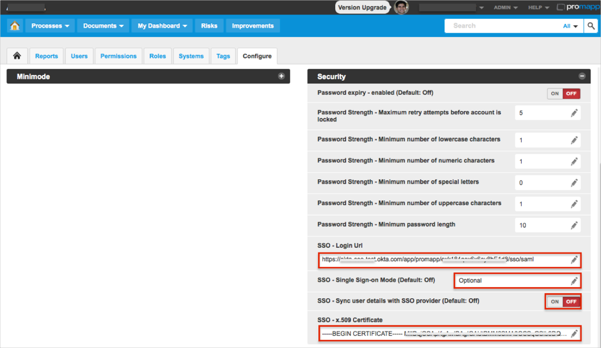
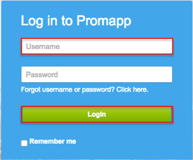

Log in to Promapp as an Administrator.
Navigate to Admin > Configure.
In the Configure section, expand the Security admin panel.
Change the Single Sign On Mode to Optional (you can change this option to Required after successful SAML configuration).
Copy and paste the following into the SSO - Login Url field:
Sign into the Okta Admin Dashboard to generate this variable.
Optional: Change SSO - Sync user details with SSO provider (Default: Off) Dsf if you need to enable Just In Time (JIT) provisioning.
Copy and paste the following certificate into the SSO - x.509 Certificate field:
Sign into the Okta Admin Dashboard to generate this variable.

Done!
Notes:
SP-initiated flows, IDP-initiated flows, and Just In Time (JIT) provisioning are all supported.
CASE 1: The Single Sign On Mode is Optional
Open https://[yourSubdomai].promapp.com/[yourCompanyId]/Login.aspx page.
Enter your Username.
Click Login.

CASE 2: The Single Sign On Mode is Required
Open https://[yourSubdomai].promapp.com/[yourCompanyId] page.